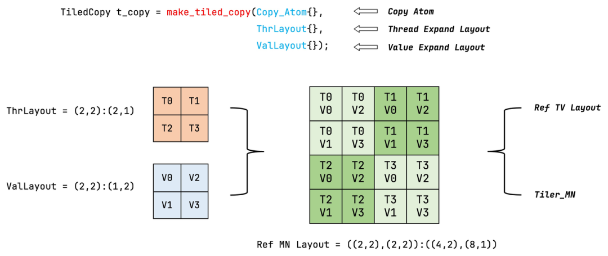

sequenceDiagram
autonumber
participant T as 线程集
participant Pred as 边界掩码 (Predication)
participant HW as cp.async 硬件引擎
participant SM as 共享内存 (SMem)
T->>Pred: 判定坐标是否位于张量有效边界内
alt 边界内
Pred->>HW: 发射 128 位宽向量化 cp.async 异步拷贝指令
HW->>SM: 硬件直通写入共享内存 (无需经过寄存器)
else 越界
Pred->>SM: 写入 0 (Padding 零填充保护)
end
第 4 课：Tiled Copy、向量化与 Predication
参考答案版：包含完整代码实现与问答题深度参考解析。建议先独立完成练习题后再展开核对。
本课目标与完成标准
学完后你应能：设计线程—数据映射，区分逻辑边界 mask 与对齐/向量化条件。
通过必须同时满足：
- 独立补齐本课唯一的代码填空题，并通过给定检查；
- 三个问答题均说明因果链，而不是只报术语；
- 能指出至少一个正确性边界和一个性能取舍；
- 总分不低于 8/10，且没有一票否决级概念错误。
前置关系
- 课程前置：CUDA 线程模型、GEMM、C++ 模板基础
- 本课在路线中的作用：Tiled Copy 把 copy atom 与线程/值 layout 组合，描述哪些线程搬哪些元素；它是数据运动的可组合对象。
核心心智模型
核心操作与执行流程图解

图 4-1：CUTLASS Tiled Copy 构造与数据搬运抽象
图 4-2：Tiled Copy 向量化加载与掩码谓词保护执行时序
1. 它是什么，解决什么问题
CuTe Tiled Copy（分块数据搬运与向量化掩码） 是 CUTLASS 3.x 中管理片上与全局数据流转的高阶抽象。
数据搬运的硬件瓶颈与抽象突破（结合图 4-1 与图 4-2）： - 低效标量加载 vs. 硬件向量指令：若每个线程逐个读取 2 字节（FP16）或 4 字节（FP32），GPU 显存总线将被海量的小事务指令挤爆，指令发射器严重过载。现代 GPU 提供了 128-bit（16 字节）宽向量指令（如 LDG.E.128、Ampere 异步显存拷贝 cp.async，以及 Hopper 硬件级张量内存加速器 TMA）； - Tiled Copy 的统一建模（图 4-1）： \[\text{TiledCopy} = \text{Copy\_Atom (硬件拷贝微指令)} + \text{ThreadLayout (线程拓扑)} + \text{ValLayout (向量值排布)}\] 它以声明式的方式精确描述了：“Block 内哪些线程以何种向量粒度、按何种空间步长协作搬运哪一块 Tile”； - 非对齐尾块的数据越界防护（Predication）：在实际业务中，矩阵维度极少恰好是分块尺寸（如 128 或 256）的整数倍。Tiled Copy 通过自动生成谓词掩码（Predication Tensor），在硬件层面安全遮蔽越界访问，杜绝显存段错误。
2. 它如何工作（结合图 4-1 与图 4-2）
以 Ampere 架构下的异步搬运 cp.async 为例，Tiled Copy 的执行流水线如下： 1. 构建原子搬运（Copy Atom）与 Tiled Copy： - 选取硬件原子指令，如 Copy_Atom<SM80_CP_ASYNC_CACHEGLOBAL<uint128_t>, half_t>； - 组合 128 线程的拓扑布局（如 (32, 4) 形状），构造出一次可搬运 \(128 \times 64\) 字节的 tiled_copy 对象； 2. 张量分区与局部切片绑定： - 全局张量 gA 与共享内存张量 sA 分别调用 tiled_copy.get_slice(threadIdx.x) 提取当前线程持有的源切片 tAgA 和目标切片 tAsA； 3. 坐标映射与谓词掩码生成（图 4-2）： - CuTe 结合张量的逻辑有效边界（如真实尺寸 \(M, K\)），利用 create_predicate_tensor 自动为每个向量元素生成布尔谓词（Predicate Mask）； 4. 硬件级条件拷贝（Predicated Execution）： - 调用 copy_if(tiled_copy, tApA, tAgA, tAsA)； - 对于边界内的合法坐标，硬件直接发起 128-bit 异步拷贝，数据直接从全局显存写入共享内存，全程不占用任何物理通用寄存器（Bypass Register File）； - 对于越界坐标，硬件谓词置为假，自动在共享内存写入填充值 0，确保后续 Tensor Core 矩阵乘法结果不受脏数据干扰。
3. 正确性条件与常见误区
- 谓词掩码（Predicate）绝无法修复物理非对齐（Misalignment Trap）：
- 致命误区：很多开发者以为“只要开启了 Predicate，就能对任意奇数地址使用 128-bit 向量指令”；
- 硬件铁律：128-bit 向量指令（
uint128_t/ 16 字节）在 GPU 硬件体系中必须严格满足基准物理地址按 16 字节对齐（ptr % 16 == 0）！ - 谓词掩码仅用于保护逻辑坐标是否越界；如果传入的显存指针物理地址未对齐，硬件执行到该指令时会直接触发
misaligned address硬件陷阱异常，整个 Kernel 当场崩溃；
- 连续维度的跨步不连续风险：
- 向量化读取要求沿连续维度（如行主序的列向）在物理显存上也是完全紧凑连续的（Stride 为 1）。若在 Leading Dimension 跨步方向错误地尝试向量化，会导致指令跨越非连续地址。
4. 性能与工程取舍
- 宽向量高吞吐 vs. 边界对齐严苛性：
- 采用 128 位向量（16 字节）可将指令发射数降至标量读取的 \(\frac{1}{8}\)，能以极高密度榨干显存总线带宽；
- 但若数据尾部存在零散残留（例如 \(N=130\)，剩余 2 个 half 仅占 4 字节），128 位向量将无法覆盖该残片，必须在边界处降级为标量处理或填充虚拟空间；
- 循环剥离：无谓词主路径 vs. 谓词尾路径（Loop Peeling）：
- 在矩阵收缩维度 \(K\) 上，若 \(K\) 很大（如 4096），前绝大多数 Tile 都是完整的内部块，完全不需要任何边界检查；
- 生产级优化：将主循环（Mainloop）编译为纯粹无谓词的直通路径（Unpredicated Path），消除每一轮的谓词求值与分支预测开销；仅在最后一个可能越界的尾块（Tail Block / Residue Tile）执行带 Predicate 的安全保护路径，端到端吞吐可提升 10%~20%。
具体演示：尾块切分与向量谓词生成演算
考虑矩阵列长 \(N = 130\)（半精度 FP16，每元素 2 字节），采用 8 个 half（128-bit，16 字节）的向量拷贝单元： - 前段对齐数据： - 索引 \(0 \sim 127\) 共 128 个元素，刚好被 \(128 / 8 = 16\) 个完整的 128 位向量拷贝覆盖； - 所有向量对应的 Predicate 均为全真 [True, True, True, True, True, True, True, True]，硬件流水线全速发射。 - 边界尾部向量（起始基准偏移量 base = 128）： - 该向量覆盖的 8 个物理槽位全局坐标为：\(128, 129, 130, 131, 132, 133, 134, 135\)； - 由于矩阵真实有效列长只有 \(N = 130\)（仅 128 和 129 合法）： - 各 Lane 谓词判定公式：\(\text{valid}_k = (\text{base} + k < 130)\)； - 自动解算生成的 Predicate 掩码为： \[\text{Mask} = [\text{True}, \text{True}, \text{False}, \text{False}, \text{False}, \text{False}, \text{False}, \text{False}]\] - 硬件据此精准只搬运前 2 个 half，后 6 个槽位在共享内存中自动清零填充，完美化解了尾块内存溢出危机。
实践任务：唯一代码填空题
补齐向量 copy 的 lane 有效掩码。
规则：只能修改 TODO/______ 所在位置；不要删除断言或放宽误差。代码注释说明了每个边界条件。
Code
def copy_mask(base, lanes, logical_size):
"""base 是本向量首元素，返回每个 lane 是否在逻辑边界内。"""
# TODO：只补齐下面这个表达式。
return ______
assert copy_mask(128, 8, 130) == [True, True, False, False, False, False, False, False]
assert all(copy_mask(0, 8, 8))检查方法
运行本单元格；所有 assert 必须通过。另手工构造一个边界输入，解释预期结果。
提交时请给出：补齐后的代码、实际运行输出（环境不可用时注明“仅静态审查”）以及对失败用例的解释。
Q1
不要背定义：请从输入、状态变化和输出三个阶段解释“Tiled Copy、向量化与 Predication”的工作机制。
你的答案：
Q2
有 predicate 就能安全执行任意未对齐的 128-bit load 吗？
你的答案：
Q3
如何把规则主体与尾块拆成两个路径，何时值得？
你的答案：
评分与通过规则
- 代码 4 分：正常输入 2 分，边界输入 1 分，解释实现 1 分；
- Q1～Q3 各 2 分；
- 一票否决：结果碰巧正确但核心因果链错误、删除边界检查、把未运行结果说成实测。
需要提示时按四级机制请求：概念区域 → 具体方向 → 关键局部 → 完整答案。